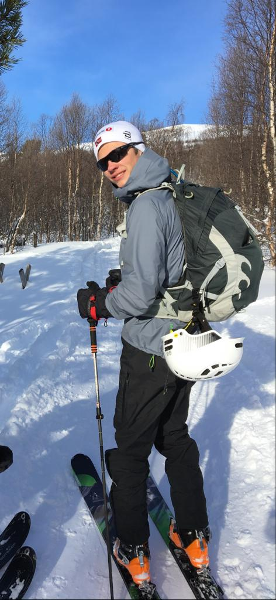

Corwin is from Fayetteville, Arkansas. He did his undergraduate studies at the United States Naval Academy where he earned a degree in Robotics and Control Engineering. He is now studying in the Computational Science and Engineering Master’s Program at MIT. After this he will serve as a submarine officer in the US Navy. He enjoys running, reading, cycling, and podcasts.

Edvard is from Ronglan, Norway. He did his undergraduate studies at the Norwegian University of Science and Technology where he earned a degree in Naval Architecture and Marine Engineering. He is now studying in the Mechanical Engineering Master’s Program at MIT. After this he hopes to return to Norway to work in the offshore wind industry. He enjoys skiing, hiking, and long romantic walks on the beach.